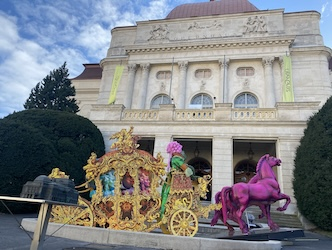

Architektur in Graz - Die Grazer Oper
Ein architektonisches Juwel im Herzen von Graz, das nicht nur Opernliebhaber begeistert...
Tauche ein in die Welt des kleinen Glücks in Graz und entdecke detaillierte Berichte über die schönsten Orte und Erlebnisse.
Ein architektonisches Juwel im Herzen von Graz, das nicht nur Opernliebhaber begeistert...
Tauche ein in die Welt des Barocks im Schloss Eggenberg, einem UNESCO-Weltkulturerbe...
Das lebendige Herzstück der Stadt und ein faszinierendes Freilichtmuseum der Architekturgeschichte...
Die Herz Jesu Kirche in Graz ist ein monumentales Meisterwerk neugotischer Architektur...
Ein bedeutendes barockes Bauwerk und ein beliebtes Ziel für Gläubige und Kunstliebhaber gleichermaßen...
Die Karl-Franzens-Universität Graz, ist nicht nur eine der ältesten und größten Universitäten Österreichs...
Entdecke die Vielfalt und Schönheit der Bäume in Graz, die die Stadt in ein Blütenmeer verwandeln...
Ich liebe Blumen – sehr. Und Graz bietet so viele Möglichkeiten, diese Leidenschaft auszuleben...
Der Stadtteil Lend hat sich in den letzten Jahren zu einem der pulsierendsten und aufregendsten Viertel von Graz entwickelt...
Der Rosenhain in Graz verwandelt sich im Frühling in einen wahren Kirschblütentraum...
Der Grazer Schlossberg, das grüne Herz der Stadt, zeigt sich im Frühling von seiner besonders romantischen Seite...
Ende Juni, wenn der Christopher Street Month weltweit gefeiert wird, verwandelt sich auch Graz...
Die Redoute der Kunstuniversität Graz (KUG) ist ein jährliches Highlight im sommerlichen Graz...
Der Grazer Schlossberg ist im Sommer nicht nur ein Wahrzeichen, sondern auch eine der schönsten Open-Air-Bühnen...
Der Grazer Stadtpark ist im Sommer die grüne Lunge der Stadt und ein beliebter Treffpunkt...
Wenn sich die Blätter verfärben und die Luft klarer wird, ist der Herbst die perfekte Zeit, um die Natur rund um Graz zu erkunden...
Die Bauernmärkte haben in Graz eine lange und lebendige Tradition und sind im Herbst...
Das Klanglicht Festival verwandelt Graz einmal im Herbst in eine riesige Freiluftgalerie...
Wenn die Temperaturen fallen und die Tage kürzer werden, bietet Graz auch in der kalten Jahreszeit...
Schnee in Graz – das ist quasi eine Legende. Obwohl wir uns in Österreich befinden, ist Graz doch zu mediterran geprägt...
Die Weihnachtszeit in Graz ist eine magische Verwandlung, die die Stadt in ein funkelndes Winterwunderland taucht...